10 Best Places To Visit in Mexico | Top Tourist Destinations
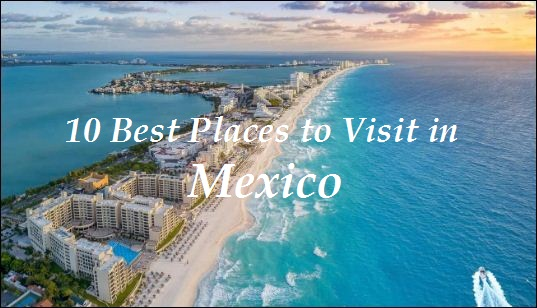
Mexico is a diverse and vibrant country located in North America, with a rich cultural history that reflects a mix of indigenous and Spanish influences. It is bordered by the United States to the north, the Pacific Ocean to the west, and Belize and Guatemala to the south. Some of the notable features of Mexico include its stunning beaches, ancient ruins, and lively cities, as well as its delectable cuisine. The capital of Mexico is the bustling metropolis of Mexico City, which is also the largest city in the country.
- Cancun
- Tulum
- Mexico City
- Playa del Carmen
- Cabo San Lucas
- Puerto Vallarta
- Cozumel
- Oaxaca
- Mérida
- Guadalajara
10 Best Places to visit in Mexico
-
Cancun
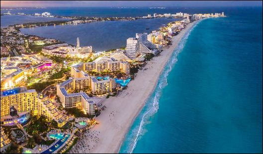Nestled on the Caribbean coast of Mexico, in the state of Quintana Roo, Cancun is a city renowned for its stunning beaches and crystal clear waters. Tourists flock to Cancun to enjoy the warm weather and participate in a variety of aquatic activities, such as swimming, sunbathing, and water sports.
In addition to its natural beauty, Cancun is home to a plethora of luxury resorts that attract visitors from around the globe. At night, the city comes alive with its vibrant nightlife scene, featuring an array of bars, clubs, and restaurants. Those seeking a tropical paradise for their vacation often choose Cancun as their destination, particularly spring breakers.
-
Tulum
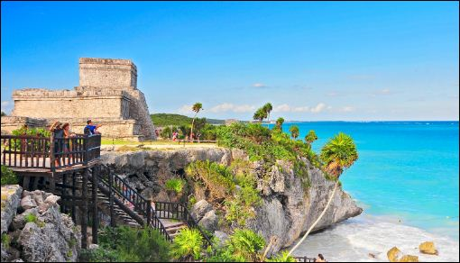
Tulum is a charming town located on the Caribbean coast of Mexico, in the state of Quintana Roo. It is known for its stunning beaches and ancient Mayan ruins, which attract many tourists to the area. The ruins of Tulum are situated on a cliff overlooking the ocean, and are a popular attraction for history enthusiasts and travelers seeking a glimpse into the past.
Along with its cultural and historical offerings, Tulum is also a popular destination for ecotourism. The town is home to numerous nature reserves and eco-friendly resorts, making it a great destination for those interested in experiencing the natural beauty of the region. Tulum is also known for its laid-back and bohemian atmosphere, with many yoga retreats and wellness centers located in the area. Tourists seeking a combination of history, nature, and relaxation often choose Tulum as their destination.
-
Mexico City
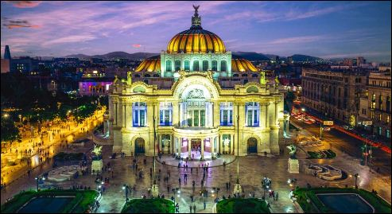Mexico City, the capital and largest city of Mexico, is a popular tourist destination known for its rich history, culture, and vibrant modern atmosphere. The city is home to many iconic landmarks, such as the Metropolitan Cathedral and the National Palace, as well as numerous museums that showcase the country's diverse cultural heritage. The Historic Center of Mexico City is a particularly popular destination for tourists, with many notable landmarks and cultural sites located within the area.
Besides its cultural attractions, Mexico City is also known for its bustling markets, where tourists can shop for souvenirs and try local food. The La Merced Market and the San Juan Market are two popular destinations for those looking to experience the city's colorful market culture. The city is also home to many parks and green spaces, such as the Bosque de Chapultepec, the largest city park in Latin America, and the Alameda Central, a popular spot for strolling and relaxing. Finally, Mexico City is renowned for its delicious food, with a range of local and international cuisines available, and its lively nightlife scene, featuring a variety of bars, clubs, and music venues.
-
Playa del Carmen
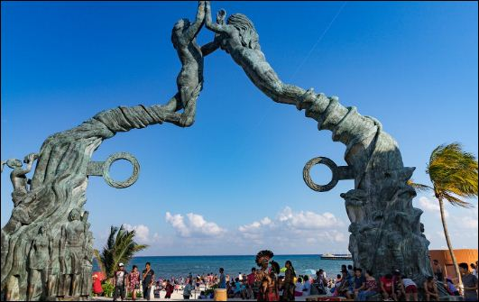
Playa del Carmen is a sunny paradise located on the Caribbean coast of Mexico, in the state of Quintana Roo. It boasts a series of stunning beaches and crystal clear waters, which are perfect for a variety of aquatic activities, such as swimming, sunbathing, and water sports. The city is also a world-renowned destination for diving and snorkeling, with the second-largest coral reef on earth located just offshore.
Apart from picturesque beaches and marine life, Playa del Carmen is renowned for its lively nightlife scene, featuring a plethora of bars, clubs, and restaurants located in the downtown area. The city is a popular destination for tourists seeking a luxurious beach vacation, with many opulent resorts and hotels located in the area. It is also a convenient base for exploring nearby Mayan ruins and natural wonders, such as the Tulum ruins and the Sian Ka'an Biosphere Reserve. All of these factors contribute to Playa del Carmen's reputation as a premier tourist destination.
-
Cabo San Lucas
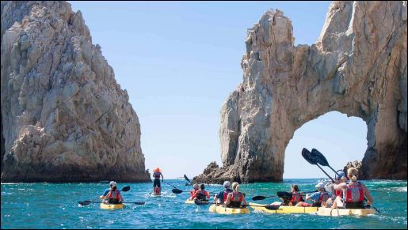Cabo San Lucas is a city located in the southern part of Mexico's Baja California peninsula. It is a popular tourist destination known for its beautiful beaches and clear blue waters, which are ideal for swimming, sunbathing, and water sports. The city is also a prime spot for fishing, with many boats offering deep sea fishing excursions.
In addition to its natural attractions, Cabo San Lucas is home to many luxury resorts and hotels that draw tourists from around the world. The city is also well-known for its vibrant nightlife scene, with numerous bars, clubs, and restaurants located in the downtown area. Beyond the city limits, Cabo San Lucas serves as a convenient base for exploring the surrounding region and participating in outdoor activities such as golfing, snorkeling, and whale watching. These features combine to make Cabo San Lucas an attractive tourist destination.
-
Puerto Vallarta
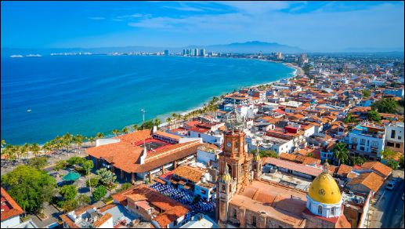
Puerto Vallarta is a city located on the Pacific coast of Mexico, in the state of Jalisco. It is known for its beautiful beaches, charming old town, and vibrant art scene. The city is a popular destination for tourists seeking a beach vacation, with many luxury resorts and hotels located in the area.
Puerto Vallarta is also known for its delicious food, with a range of local and international cuisines available. The city is home to many fine dining restaurants and street food stalls, offering something for everyone. In addition, Puerto Vallarta is a popular destination for outdoor activities, such as hiking, fishing, and water sports. The city is surrounded by the Sierra Madre Mountains and is located near the Marietas Islands, which are home to a variety of wildlife and offer opportunities for snorkeling and diving.
-
Cozumel
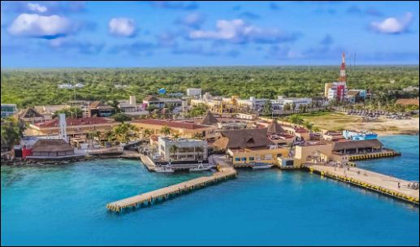Cozumel is a tropical paradise located in the crystal-clear waters of the Caribbean Sea. Its pristine beaches and stunning coral reefs draw tourists from all corners of the globe, seeking to immerse themselves in the island's vibrant culture and natural beauty.
Moreover, Cozumel is more than just a beach destination; it is a place rich in history and culture. The ancient Mayan civilization once flourished on the island, leaving behind a legacy of mysterious ruins and artifacts that continue to captivate the curiosity of history buffs and archaeology enthusiasts. From exploring the island's colorful streets and markets to discovering the secrets of its past, Cozumel offers a truly fantastic vacation experience for all who visit.
-
Oaxaca
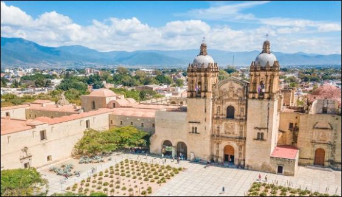
Oaxaca is a city in southern Mexico that is known for its rich culture, history, and art. The city is the capital of the state of Oaxaca and is located in a region that has a long and varied history, with influences from the indigenous Zapotec and Mixtec cultures as well as Spanish colonial times. Oaxaca is famous for its vibrant art scene, with a number of galleries and studios showcasing the work of local artists.
The city is also known for its colorful architecture and traditional handicrafts, such as textiles, ceramics, and basketry. Oaxaca is also a popular destination for foodies, with a cuisine that is known for its use of indigenous ingredients and bold flavors. Additionally, the surrounding region is home to a number of pre-Columbian archaeological sites, which are popular with tourists who are interested in history and archaeology.
-
Mérida
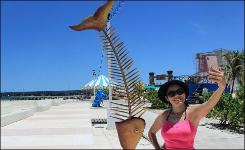Mérida is a city located in the northwest region of the Yucatan Peninsula in Mexico. It is known for its rich cultural heritage, which dates back over 2,000 years to the ancient Maya civilization. The city is home to several important historical and cultural sites, such as the ancient Maya city of T'ho, the Convent of San Bernardino de Siena, and the Hacienda Yaxcopoil. These sites attract many tourists and locals alike, who come to learn about the city's history and culture.
Mérida is also known for its vibrant arts and music scene, delicious cuisine, and friendly people. The city is home to a number of museums, galleries, and cultural centers, as well as many festivals and events throughout the year. Visitors can also enjoy the city's beautiful parks and natural reserves, including the Celestún Biosphere Reserve, which is home to a wide variety of wildlife, such as flamingos, manatees, and numerous species of birds. All of these factors make Mérida an interesting and dynamic city that is worth visiting.
-
Guadalajara
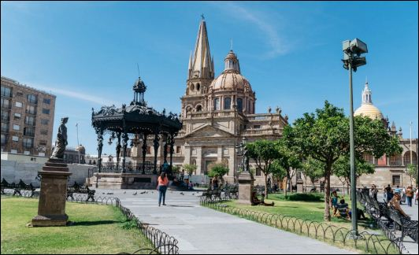
Guadalajara is the capital and largest city of the state of Jalisco in Mexico, and it is indeed a popular tourist destination. Located in the central region of the country, the city is known for its rich culture, vibrant arts and music scene, and delicious cuisine. Some of the top attractions in Guadalajara include the historic center of the city, which is home to a number of important landmarks and cultural sites, such as the Cathedral of the Assumption, the Palacio de Gobierno, and the Rotonda de los Hombres Ilustres.
Other popular tourist attractions in the city include the Malecón, a waterfront promenade that is home to a number of restaurants, shops, and entertainment venues, as well as the Barranca de Huentitán, a beautiful natural reserve located on the outskirts of the city. Overall, Guadalajara is a vibrant and culturally rich city that is well worth a visit.